Surface Lab tutorial
Tune the road surface and the track dressing together, live on a real track, then save the result straight into the files the game loads.
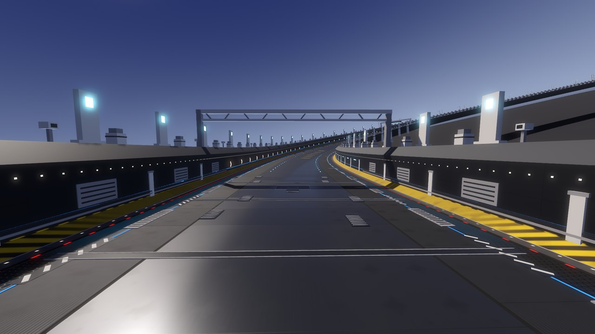
What it is
Surface Lab is a dev scene for Full Throttle Flux. It runs the game's own track, with the game's own lighting and weather, with an editor on top. Every change draws immediately using the same code a race uses.
It exists because two layers have to work together:
- The road surface: one procedural shader that draws lanes, panels, lights, wear and weather.
- Greebles: the scattered dressing of lamps, panels, railings and gantries.
Tuned separately, they drift apart. The lab puts them on one screen and gives you views made for judging how they sit together.
.tres files whenever a track loads, so saving in the lab is all it takes for the game to pick up your work.Launching it
In the Godot editor, open res://tools/surface_lab/surface_lab.tscn and press F6. Or from the repo root:
godot --path full_throttle_flux res://tools/surface_lab/surface_lab.tscnIt opens on Builder Lab, moving round the lap in the Glide camera. Press Space to pause, and H to hide the interface and see the frame by itself.
To open another builder track, set LAB_TRACK to its scene name, such as LAB_TRACK=fork_lab.
The screen

- Top bar: camera, weather, debug views, layer switches, compare, save.
- 3D view: the real track, drawn the way the game draws it.
- Tabs: everything you can edit, plus the cost readout.
- Checks: problems found as you work.
- Section: the road's cross-section at the camera.
- Rhythm: what repeats along the track, and how it lines up.
- Timeline: the whole lap, with both layers' zones.
Your first look
A five-minute run through the main idea, with nothing saved until the last step.
- Press Space to stop the camera, then click a spot on the timeline to jump there.
- In the section view, click a teal grate band. The Bands tab opens with it selected.
- Drag width up and watch the lanes move on the road.
- Open the Mask tab and choose the
worn_patchesrecipe. - Hold C to see the saved look, and let go to return to yours.
- Press Ctrl+Z until you're back where you started, or press Ctrl+S to review what would be saved.
Top bar
Cameras
| Camera | What it does | Use it for |
|---|---|---|
| Fly | Hold the right mouse button to look, WASD and Q/E to move, Shift for fast, the wheel to change speed. | Inspecting details up close. |
| Glide | The chase view sliding round the lap with no physics. The slider sets its speed and Space pauses it. | Most tuning. It's repeatable and easy to stop. |
| Chase lap | A real AI ship on its trained line with the game's chase camera and motion blur. | The final judgement, at real speed. |
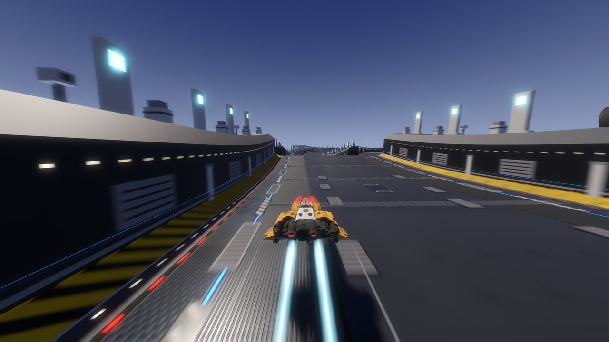
Weather
The weather menu applies the game's presets instantly. Rain and snow settle differently on grates, channels and panels, so it's worth checking a look under a couple of them.
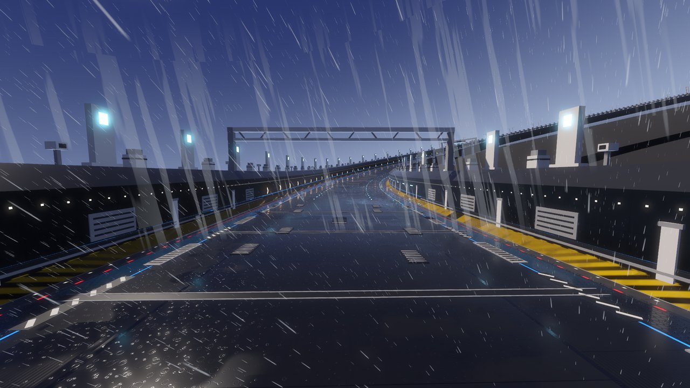
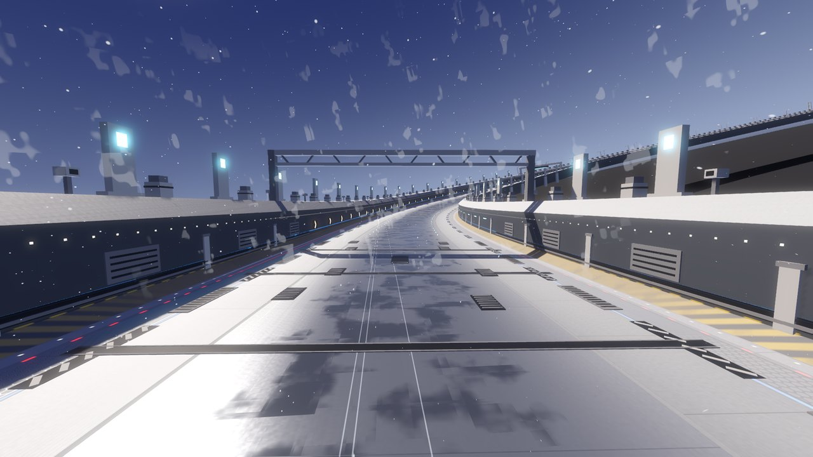
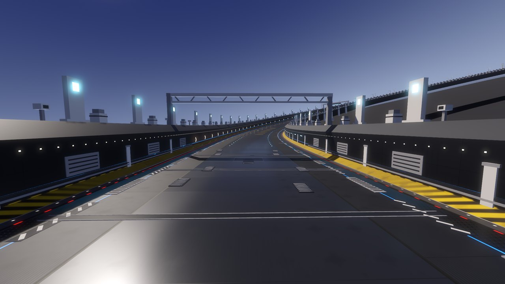
The rest of the bar is covered below: layer switches, debug views, compare and snapshots and saving. The GPU figure on the right is the median of the last 60 frames.
Isolating layers
When something looks wrong, these switches tell you which layer is responsible.
- Road off: a plain grey road and walls, to judge greebles by shape alone.
- Greebles off: the surface by itself.
- Layer checkboxes: show or hide ground, wall face, wall top, outside and overhead pieces.
- Solo rule (in the Greebles tab): one rule alone.
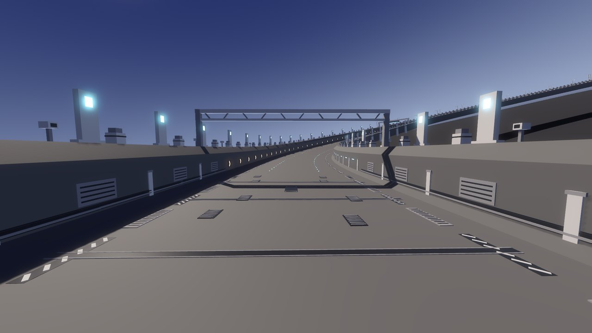
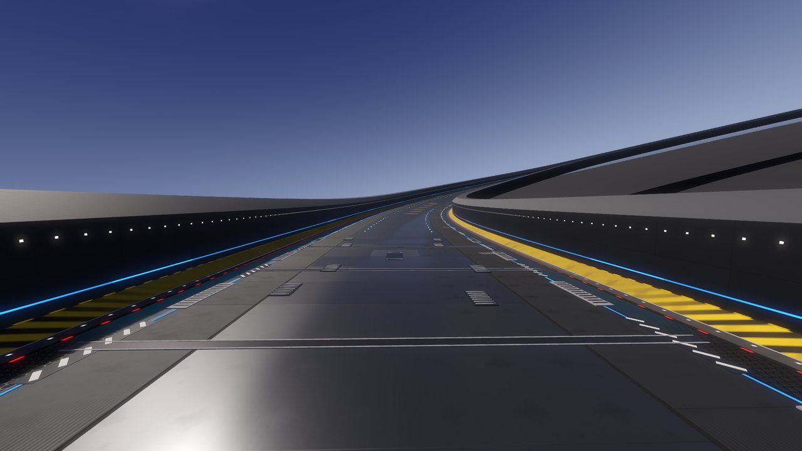
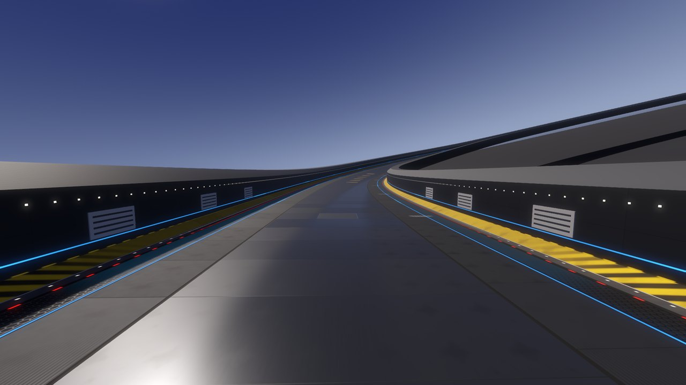
wall_panelDebug views
The debug menu replaces the road's colour with data about how it's being drawn. It's also on 9, as in the game.
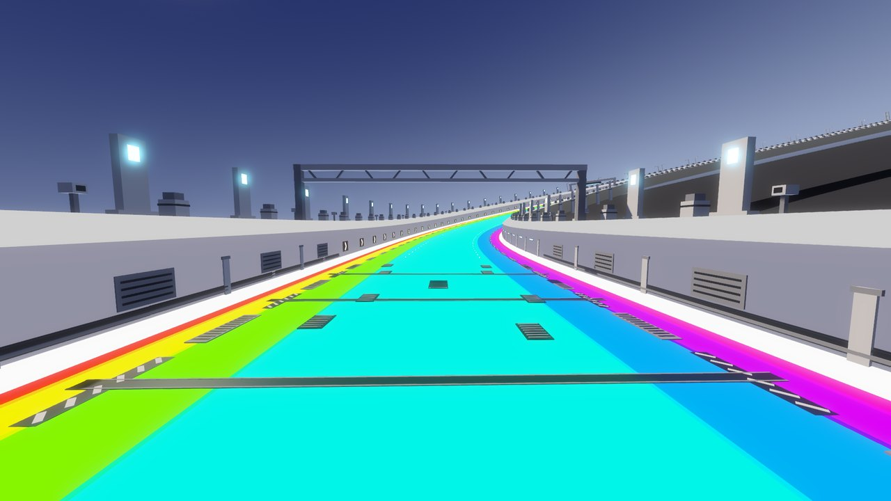
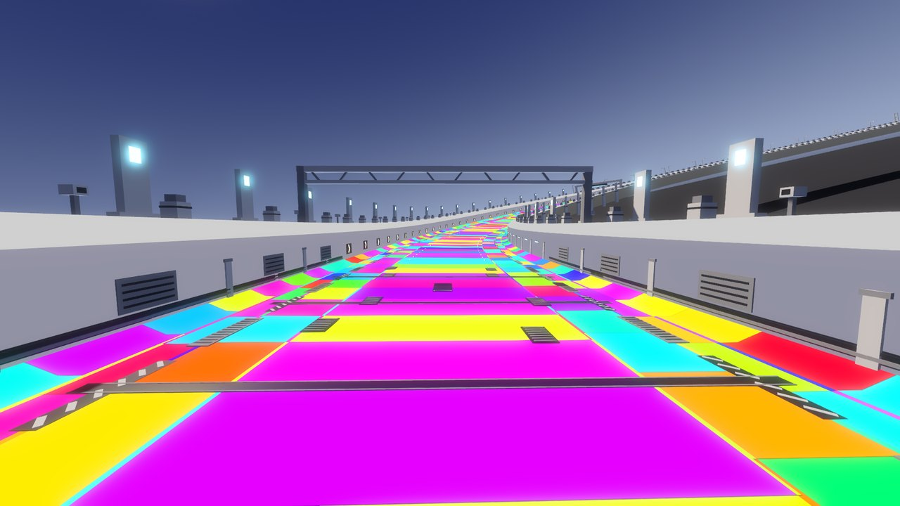
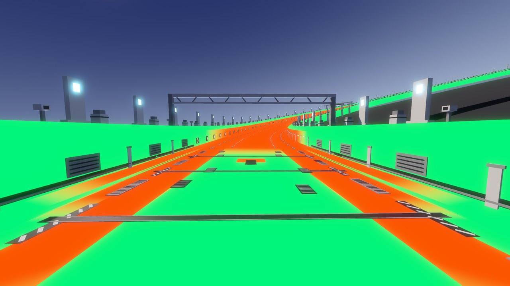
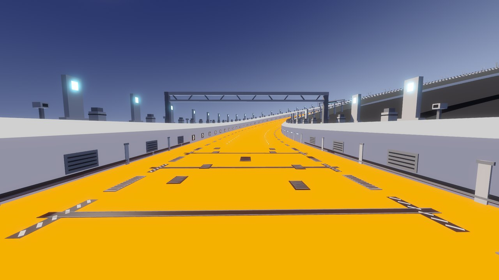
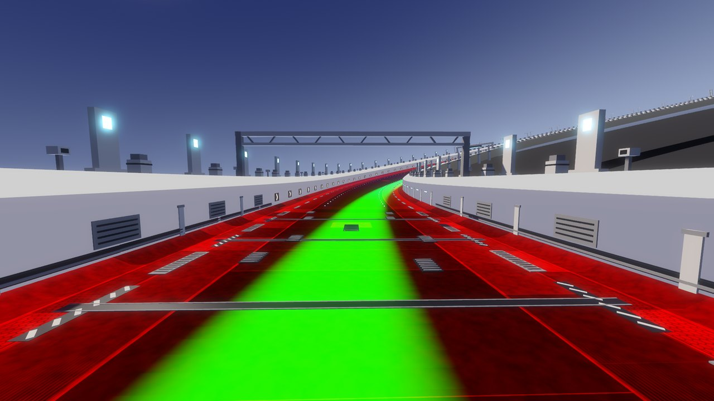
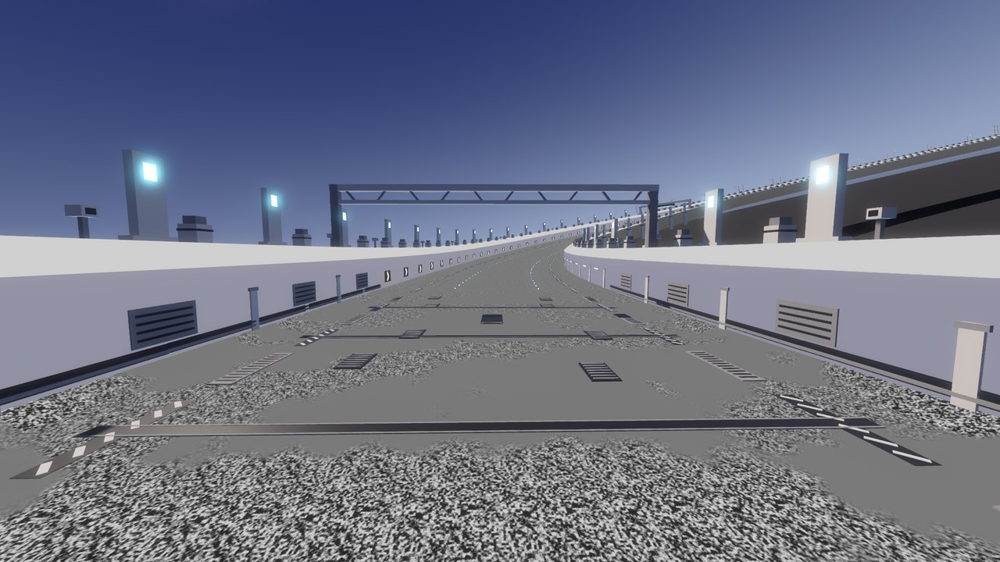
There's also s, t, which shows the road's along-track and across-track coordinates. It's mostly useful for debugging the shader itself.
Section view
The road cut across at the camera, with both layers drawn to one across-the-road scale. Bands run along the bottom, the wall outline sits above them, and each greeble rule is a pin where it actually lands at this road width.
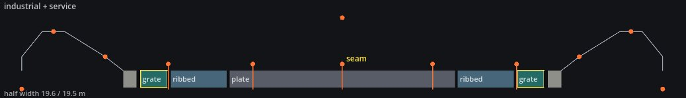
- Click a band to select it in the Bands tab.
- Click a pin to select that rule in the Greebles tab.
- Drag a fixed band's inner edge to resize it.
- Drag a ground pin to change its
lateral.
Height uses its own scale, because the view is far wider than it is tall. Hover over anything for its exact position.
Why it matters: width changes
Bands keep their width and stack in from the road's edge, with only the flex bands stretching. Ground pieces instead scale their position with the road's width. So a piece that sits neatly on a lane where the road is standard can drift off it where the road is wider.
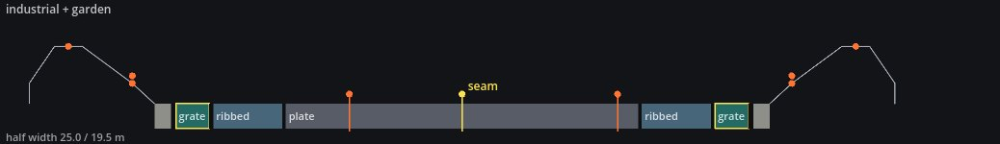
Rhythm view
A ruler along the track, showing 120 m around the camera. It shows road seams of the selected band, wall panels, and every rule of the current greeble style.
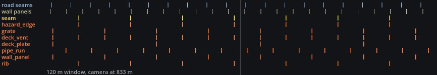
Use it to decide what should line up and what shouldn't. A row of lamps can land on a seam for a deliberate, engineered look, or sit against it so the pattern doesn't feel mechanical.
probability thins them out at random.Timeline
The whole lap as a bar, with road zones above and greeble zones below. The orange line is the camera. Click anywhere to go there.
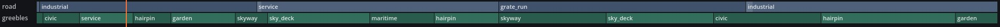
The two chains of zones are independent, so this is the quickest way to see which pairings actually occur. Look for where a road zone and a greeble zone change close together but not at the same place. In this release the timeline is read-only: zones are edited with their keys in the Track Builder, or in the TrackSurface node on a circuit.
Bands tab

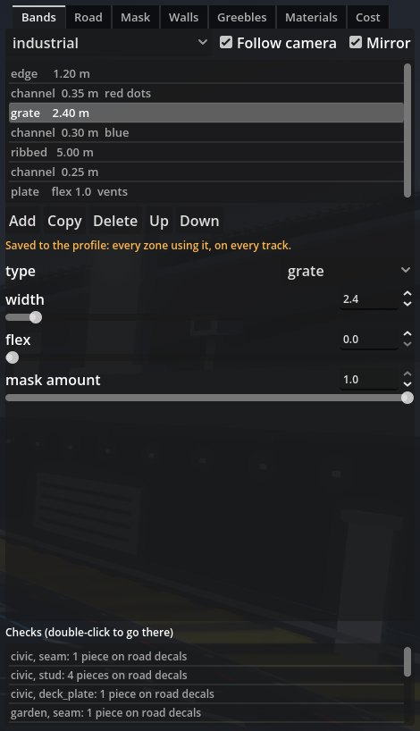
A profile is the list of lanes across the road. Each zone of a track picks one. Follow camera shows the profile and greeble style under the camera, and turns itself off when you pick one by hand. It also pauses while you edit, so the panel doesn't change under your slider.
With Mirror on, the list runs from the left edge to the centre, and the right half copies it in reverse.
| Setting | What it does |
|---|---|
type | Plate, channel, edge, ribbed or grate. |
width | Metres across, for a fixed band. |
flex | Above 0, the band shares whatever the fixed bands leave. Road width changes only affect these. |
light | Channels only: none, red dots or a blue strip. |
vents | Plates only: vent boxes every so often. |
mask amount | How strongly the surface mask reaches this band. |
Example: wider grates
The same industrial profile, with the grate band widened from 2.4 m to 7 m. Drag the slider across the picture to compare.
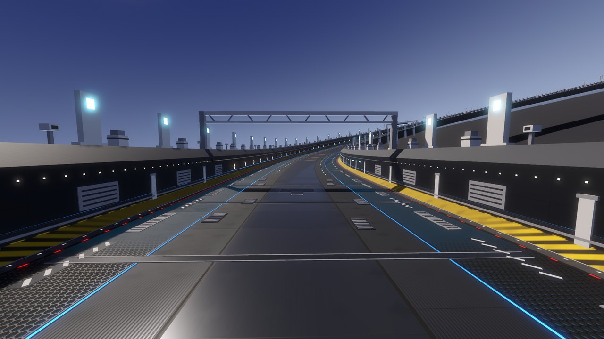
Road tab

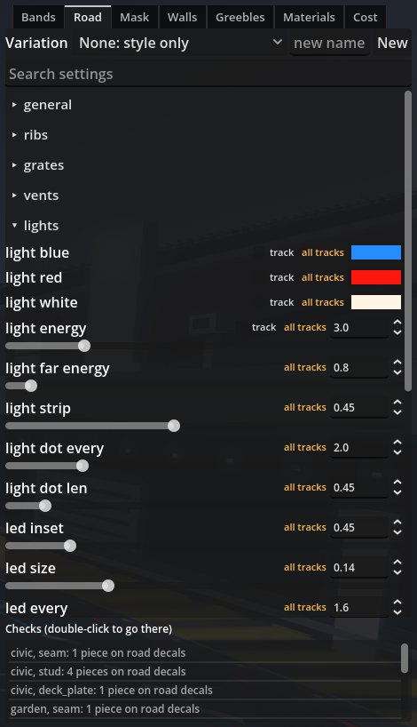
Everything the road shader exposes, about 90 settings grouped by module: ribs, grates, vents, lights, edges, wear, decals and materials. The rows are generated from the shader, so new parameters appear by themselves. Type in the search box to find one by name.
All tracks or this track
Each row carries a badge. All tracks changes the shared style. To make a change for one track only, use a variation:
- Choose a variation at the top, or type a name and press New.
- Tick track on a row. Its badge changes to this track and your edits go to the variation.
Only 17 settings can be overridden per track, and those are the ones with a tick box. Keep clear of orange (about 20 to 40 degrees of hue), because the boost pads own it.
Example: plate colour and roughness
plate_color warmed to a rust brown, with plate_roughness raised to 0.75.
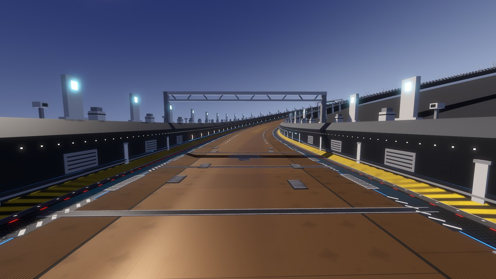
Example: lights
light_blue changed to magenta, light_red to green, and both energies raised. Look at the channels along each side.
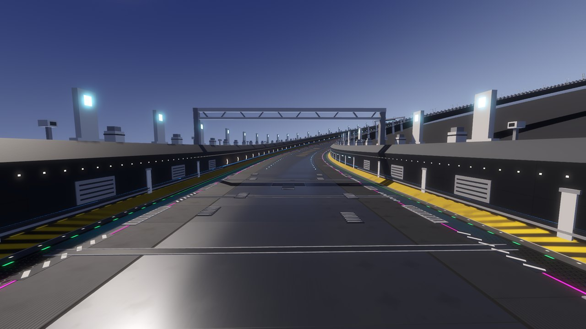
Example: wear
wear_age from 0, factory new, to 1, old, with grime and scorch turned up. The polished strip stays clean along the AI's racing line, because wear is baked from its trained line when the track loads.
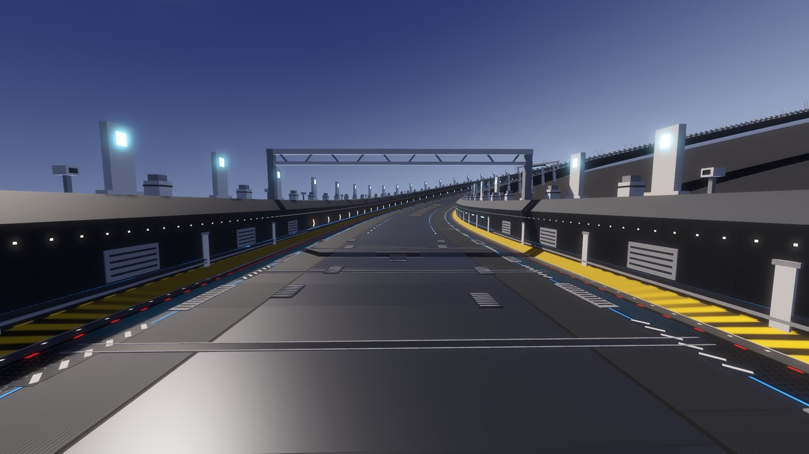
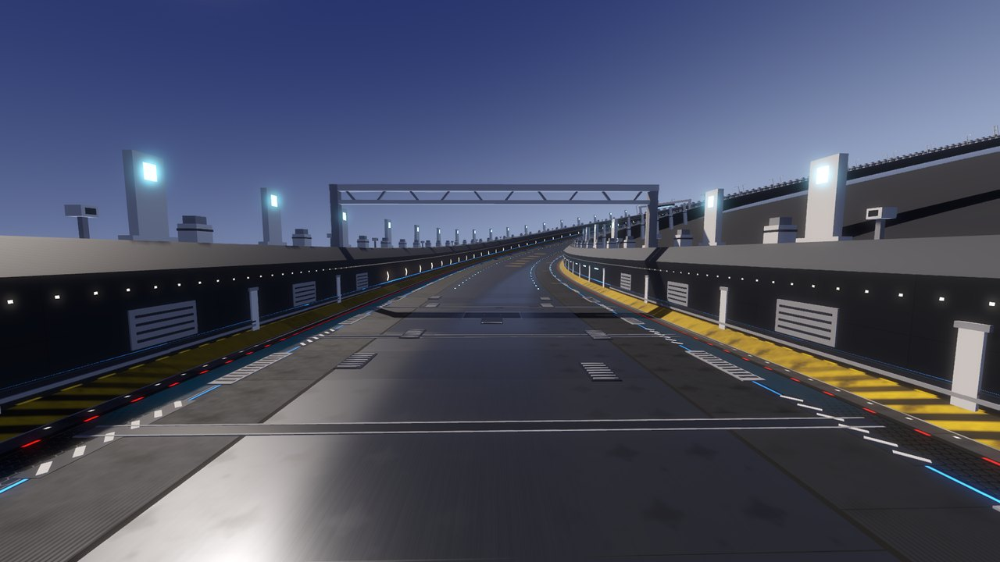
Mask tab

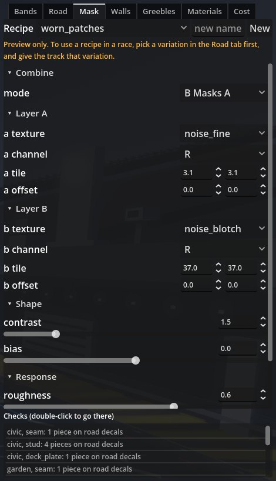
The surface mask gets many looks from a couple of images. It combines one or two tiling textures into a single value, then uses that value to push roughness, metallic and specular up and down. If you've layered noises at different scales in Maya and Arnold, this is the same idea.
A recipe is one saved setup, kept in resources/track_surface/masks. Choose one from the menu, or type a name and press New.
| Setting | What it does |
|---|---|
mode | A only, A × B, or B masks A, where B controls how much of A shows. |
texture, channel | The image for this layer, and which channel to read. |
tile | Metres per repeat, across and along the road. |
offset | Metres to slide the layer. |
contrast | Pushes the mask's values apart. |
bias | An overall shift, near and far. |
roughness, metallic, specular | How far a full mask moves each one. Negative values reverse it. |
The starter recipes
worn_patches: fine grain, shown in large patches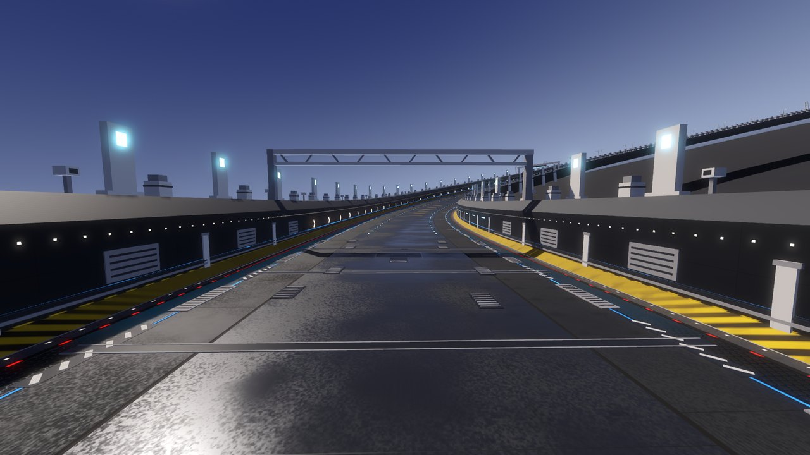
soft_clouds: broad clouds × grain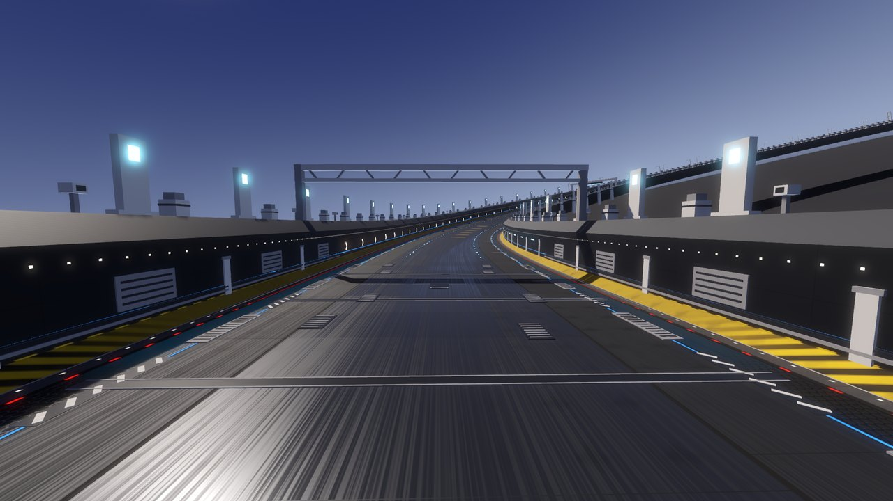
long_streaks: stretched along the trackExample: what the second layer adds
One layer alone covers the road evenly. Adding a second, much larger layer as a mask breaks that up into patches. Both pictures use the same fine grain at 3.1 m tiles, and the second adds blotches at 37 m.
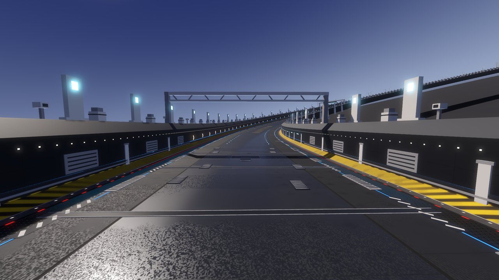
Example: leaving a band out
Set mask amount to 0 on the centre plate in the Bands tab. The lanes either side keep their texture, and the centre stays clean.
Using your own textures
Drop any tiling greyscale PNG in resources/track_surface/mask_textures and it appears in the pickers the next time you launch the lab. Import it with mipmaps on and no VRAM compression; copying an existing .import file is the easy way. The included noises are placeholders generated by tools/track_surface/make_mask_noises.gd. Rerunning it overwrites those files, so give your own images different names.
Using a recipe in a race
- In the Road tab, choose a variation or make one.
- In the Mask tab, pick the recipe. The note at the top confirms where it will be saved.
- Save, then give the track that variation: on the TrackBuilder for a builder track, or on the
TrackSurfacenode for a circuit.
The mask runs on the high quality tier and costs about 0.1 ms or less on a GTX 1080 Ti at 1080p. The low tier skips the textures but keeps the same overall look, apart from bias, which applies on both. It affects the road only, not the walls.
Walls tab

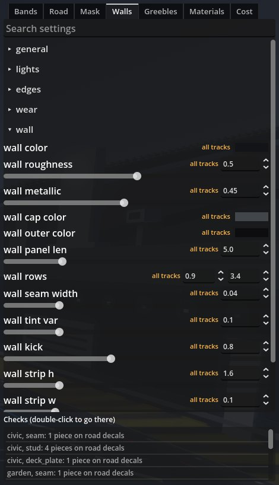
The same layout as the Road tab, for the wall shader. The wall group holds the wall's own colours and panels, including the guide strip and LED row heights. The walls have their own copies of the lights, edges and wear settings, so changing a road light doesn't change a wall light.
If a previewed variation overrides a setting, its badge reads variation overrides, and your edit won't show until you clear the override or the variation.
Example: painted walls
wall_color in the Walls tab changed to deep red, plus hazard_yellow in the Road tab's edges group changed to blue.
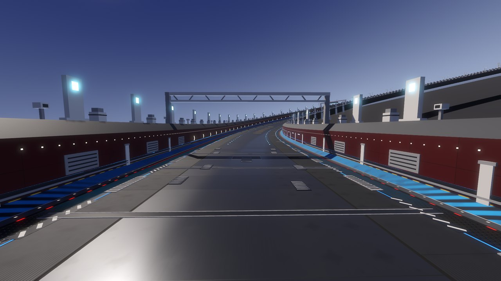
Greebles tab

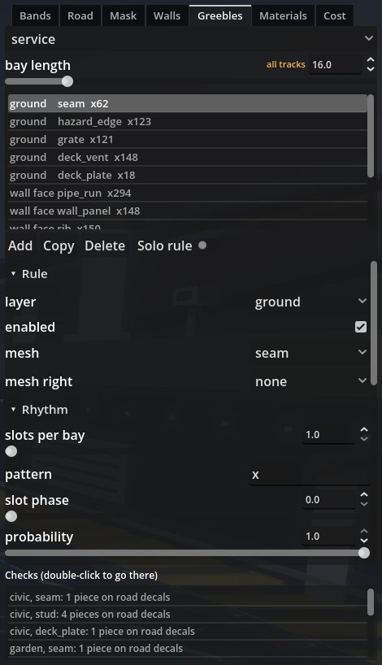
A style is a bay length plus a list of rules. Each rule scatters one mesh along the track. The list shows each rule's layer, mesh and how many pieces it places. Add, Copy and Delete edit the list, and Solo rule shows the selected rule alone.
| Group | What it controls |
|---|---|
| Rule | layer (where it attaches), on or off, and its meshes. |
| Rhythm | slots per bay, pattern, slot phase and probability. In a pattern, x places and - skips, so x--- with 4 slots means once per bay. |
| Placement | side, lateral, offset, jitter, rotation and scale. |
| Upright and surface | Whether a piece leans with the road or stands vertical, and how far it sits off its surface. |
| Rendering | Shadows, and whether to stay out of tunnels. |
Editing one rule never reshuffles the others, because each has its own random numbers. A single rule updates while you drag. Changing bay length re-scatters the lot, about a quarter of a second, so it waits until you stop.
Example: a tighter rhythm
The service style's bay_length cut from 16 m to 10 m. Every rule in the style tightens together, and you can see the whole track get busier.
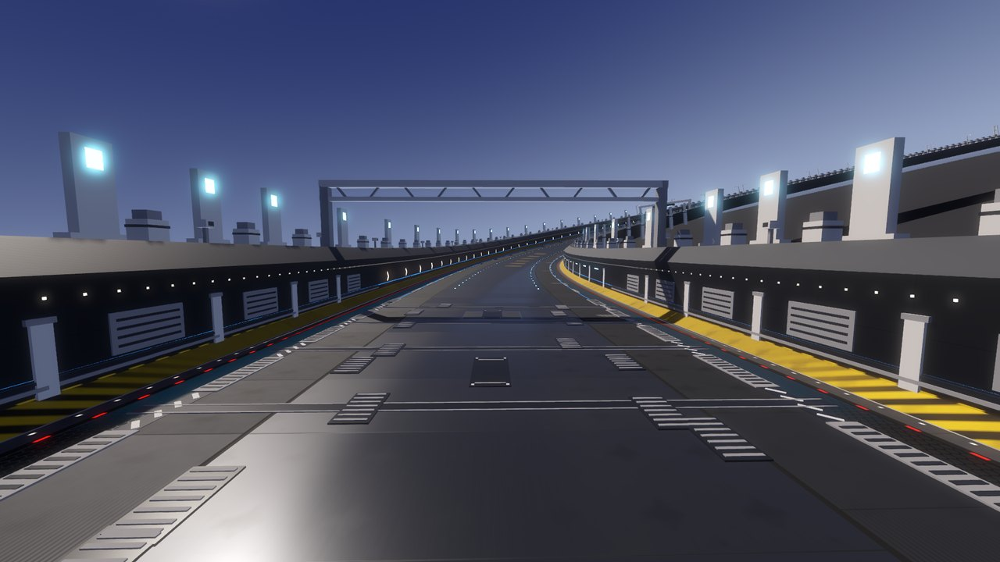
Materials tab

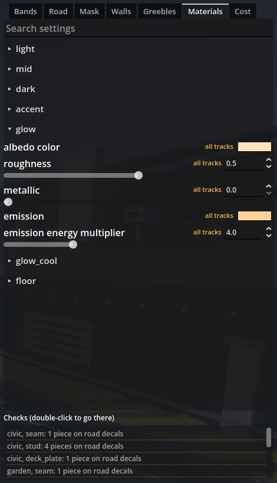
The shared materials on the greeble meshes: light, mid, dark, accent, glow, glow_cool and floor. Each has colour, roughness, metallic and emission. This is the main way to set the greebles' overall tone against the road.
Example: green glow
glow and glow_cool turned green. Every sign panel and lamp on the track follows at once.
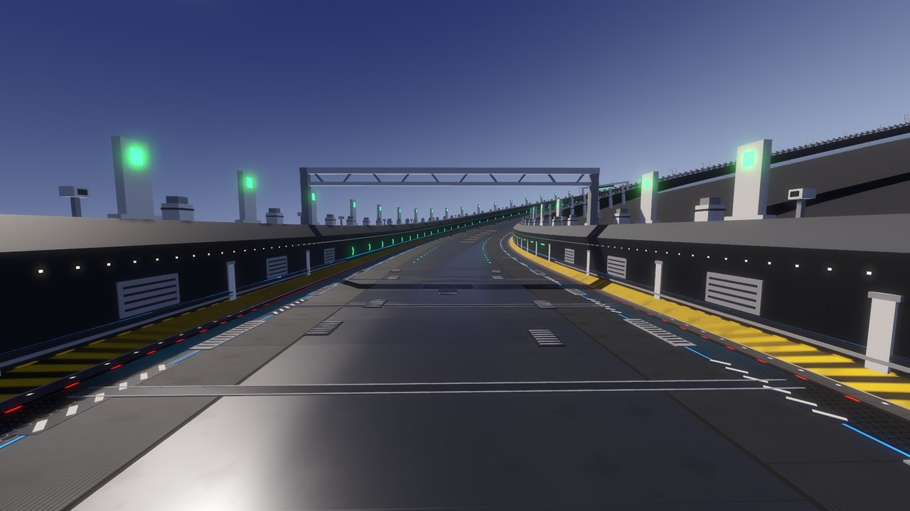
Cost tab

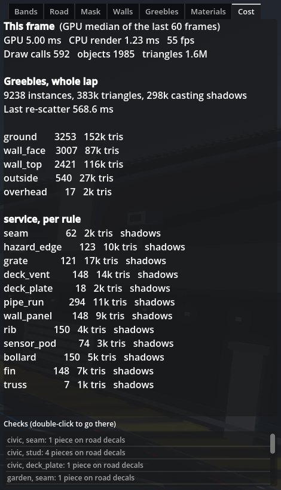
What your look costs, so you can spend it deliberately:
- This frame: GPU and CPU time, frame rate, draw calls, objects and triangles.
- Greebles, whole lap: instances, triangles and how many cast shadows, by layer. These are totals for the lap, not what's on screen now.
- Per rule: the same for the current style, which shows where the triangles go.
- Last re-scatter: how long the most recent greeble update took.
cast shadows on small rules that are mostly flat loses little. Judge any change in the same camera position, as the frame time varies a lot along a lap.Checks
The list under the tabs updates when you pause. Double-click an item with a location to go there.
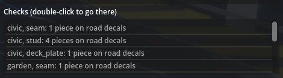
| It looks for | Why |
|---|---|
| Profile problems | Too many bands, no flex band, or two kinds of band meeting without a channel. |
| Colours close to orange | The boost pads own that hue range. |
| Greebles reaching into the track | Anything that intrudes on the corridor ships drive through. |
| Pieces left out by upright limits | A rule may be placing fewer pieces than you expect. |
| Ground pieces on road decals | Ground pieces keep off boost pads and the start line, but not painted decals. |
Compare, snapshots and undo
- Hold C (or the button) to see the saved look of both layers. Let go to return to your edits. Use this constantly, because your eye adapts quickly.
- Snapshots A and B: click an empty button to store the current look, then click it to return there. Ctrl+click stores over it. Use them to compare two directions you like.
- Undo and redo: Ctrl+Z and Ctrl+Y cover every edit in the lab, across all tabs. A slider drag counts as one step.
Saving
The top bar shows how many values are unsaved. Save or Ctrl+S lists the files first, and nothing is written until you confirm.
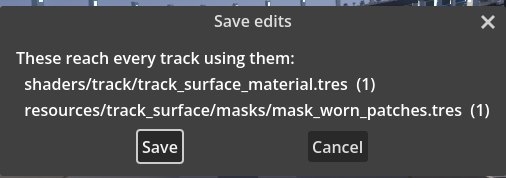
| Edit in | Saved to | Reaches |
|---|---|---|
| Road, Walls | shaders/track/track_surface_material.tresshaders/track/track_wall_material.tres | Every track |
| Road, ticked track | resources/track_surface/variations/ | Tracks using that variation |
| Mask | resources/track_surface/masks/ | Variations using that recipe |
| Bands | resources/track_surface/profiles/ | Every zone using that profile |
| Greebles | resources/greeble_presets/ | Builder track zones using that style |
| Materials | scenes/tracks/utopia/materials/ | Every greeble mesh using it, circuits included |
Saves change only the values you edited, so they make small, readable diffs. Because they're ordinary files in the repo, git is your safety net: try something on a branch, and discard it if you don't like it.
Keys
| Key | What it does |
|---|---|
| C (hold) | Show the saved look |
| H | Hide or show the interface |
| Space | Pause or resume the Glide camera |
| Ctrl+Z / Ctrl+Y | Undo / redo |
| Ctrl+S | Save, after confirming |
| Right mouse + WASD, Q/E | Fly camera. Shift for fast, the wheel for speed |
| 5 to 9, F1 | The game's debug keys still work, such as shadows, anti-aliasing and quality tier. F1 lists them. They pause while you're typing in a field |
Limits
- Builder tracks only. The lab opens tracks built with the Track Builder.
- Zones and decals are read-only. They show in the lab, but you edit them in the Track Builder or on a circuit's
TrackSurfacenode. - No new profiles or greeble styles. You can edit the existing ones, and create new variations and mask recipes.
- Variations are previewed, not assigned. The lab doesn't set which variation a track uses.
- Variations on builder walls. The lab previews a variation on the walls, but in a race, builder tracks only apply it to the road. Circuits apply it to both.
- One mask recipe per track. It can't change from zone to zone.
Fuller technical notes are in FTF_SURFACE_LAB.md. To retake every screenshot on this page after the lab changes, run it with LAB_TOUR set to a folder, as described in tools/surface_lab/surface_lab_tour.gd.